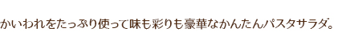
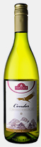
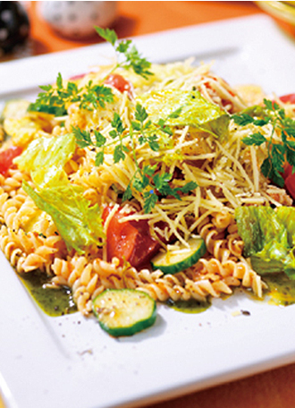
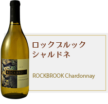

ツイート
タスマニアビーフももかたまり
塩、粗挽きこしょう
カットサラダ
モッツァレラチーズ
アボカド
ミニトマト
クレソン
エクスラバージン オリーブオイル
サウザンアイランドドレッシング
一部実施していない店舗、
取扱いがない場合がございます。

かいわれ大根
赤・黄パプリカ
タスマニアローストビーフスライス
トラウトサーモン(生食用)
早茹で90秒サラダフジッリ
いくら醤油漬け
<ソース>
塩(パスタ茹で用)
パスタソースペペロンチーノ2食入
『調味ソース』と『乾燥具』入り
穀物酢
エキストラバージンオリーブオイル

一部実施していない店舗、
取扱いがない場合がございます。
むき海老
純輝鶏(胸肉)
かぼちゃ
有機野菜ミックス
冷凍アスパラ
オーガニックペンネ
ソーセージ
サラダ用細切りチーズ
オーガニック ドレッシング オリーブオイル&バルサミコ酢
長ねぎ
しょうが
一部実施していない店舗、
取扱いがない場合がございます。
モッツァレラチーズ
生ハム
トマト(小)
バジル
<ソース>
オリーブオイル
塩
一部実施していない店舗、
取扱いがない場合がございます。
スモークサーモン
ローストチキン切落し
トマト
きゅうり
マカロニサラダ
チャービル(飾り用)
<ソース>
イタリアンドレッシング
エクストラバージン
オリーブオイル
あらびきコショー
ピンクペッパー
一部実施していない店舗、
取扱いがない場合がございます。

早ゆで90秒サラダフジッリ
レタスのサラダ
サラダ用細切りチーズ
トマト
きゅうり
チャービル(飾り用)
<ソース>
ミートソース(260g)
穀物酢
エキストラバージン
オリーブオイル
バジルペースト
あらびき黒こしょう(お好みで)
塩(フジッリ茹で用)
一部実施していない店舗、
取扱いがない場合がございます。
ロースハム
もも生ハム切り落とし
リーフレタス
3種野菜とキャベツの千切り
たまねぎ・赤たまねぎ
パプリカ(赤・黄)
<ソース>
炒めたまねぎドレッシング
一部実施していない店舗、
取扱いがない場合がございます。
スパゲッティ(1.6mm)
オイル不使用ライトツナフレーク
トマト
たまねぎ
にんにく(すりおろし)
パセリ(みじん切り)
<ソース>
コンソメ
味付け塩こしょう
ピュアオリーブオイル
水
塩
一部実施していない店舗、
取扱いがない場合がございます。
オーガニックスパゲッティ 1.6㎜
納豆
ぶなしめじ
オーガニックめんつゆ
バター
きざみ海苔
大葉
一部実施していない店舗、
取扱いがない場合がございます。
トップバリュ ベストプライス
スパゲッティ1.7㎜
アスパラガス（ガクを取り幅
1.5㎝の斜め切り）
ブロッコリー（小房に分ける）
にんにく（薄切り）
鷹の爪（種を取る）
トップバリュ ハーフベーコン
（幅1.5cmに切る）
<ソース>
塩（スパゲッティ用）
オリーブオイル
塩
こしょう
一部実施していない店舗、
取扱いがない場合がございます。
スパゲッティ(1.4mm)
モッツァレラチーズ
トマト
ミニトマト
にんにく(すりおろし)
バジル
<ソース>
味付け塩こしょう
ピュアオリーブオイル
水
塩
一部実施していない店舗、
取扱いがない場合がございます。
トップバリュ 早ゆでマカロニ
ボイルあさりむき身
にんにく(みじん切り)
たまねぎ(1cm角に切る)
ミディトマト
ピーマン(1cm角に切る)
<ソース>
水
コンソメスープの素
白ワイン
砂糖
オリーブオイル
塩
こしょう
一部実施していない店舗、
取扱いがない場合がございます。
サーモントラウト
スパゲッティ
パスタソースカルボナーラ
いんげんまめ
カリフラワー
<ソース>
塩、こしょう
オリーブオイル
ガーリックパウダー
一部実施していない店舗、
取扱いがない場合がございます。
スパゲッティ(1.6mm)
麻婆なすの素
なす
豚挽肉
青ねぎ(小口)
<ソース>
油
水
塩
一部実施していない店舗、
取扱いがない場合がございます。
リングイーネ
ホタテ(角切り)
あさり(殻つき)
アンチョビフィレ
フレッシュトマト
(湯むきし、角切りにしたもの)
オリーブオイル
白ワイン
白こしょう
イタリアンパセリ(みじん切り)
<ソース>
<仕上げ用>
無塩バター (仕上げ用)
ミニトマト (半切り)
青の洞窟 トッピング
一部実施していない店舗、
取扱いがない場合がございます。
リングイーネ
フレッシュトマト(角切り)
ドライトマト(角切り)
にんにくオイル※にんにくのみじん切りを、オリーブオイルにつけておいたもの
バジル
生クリーム(乳脂肪分35%)
パルミジャーノチーズ
(すりおろしたもの)
無塩バター(トマトソテー用)
無塩バター(仕上げ用)
オリーブオイル
<ソース>
<仕上げ用>
ミニトマト(半切り)
パルミジャーノチーズ(薄切り)
バジル
一部実施していない店舗、
取扱いがない場合がございます。
リングイーネ
にんにく（みじん切り）
オリーブオイル
バジル（千切り）
バター
帆立貝柱（1cm角）
トマト（1cm角）
白ワイン
生クリーム
<ソース>
<仕上げ用>
帆立貝柱グリル
バジル
パルミジャーノ・レッジャーノ
オリーブオイル
ブラックペッパー
一部実施していない店舗、
取扱いがない場合がございます。
スパゲッティ 1.7mm
トマト
海老
帆立貝柱
アサリのむき身
にんにく
EXVオリーブオイル
白ワイン
生クリーム
<ソース>
<仕上げ用>
パルミジャーノ（スライス）
黒胡椒
イタリアンパセリ
一部実施していない店舗、
取扱いがない場合がございます。
スパゲッティ 1.5mm
クレソン(3cm幅カット)
鶏レバー(1cm角)
たまねぎ(みじん切り)
オリーブオイル
バター
白ワイン
黒胡椒
ゆで汁
パルミジャーノ・レッジャーノ
（すりおろしたもの）
<ソース>
<仕上げ用>
70%カカオ チョコレート(湯煎したもの)※ビターチョコレートでも代用可
黒胡椒
パルミジャーノ・レッジャーノ(スライス)
クレソン
70%カカオ チョコレート(スライス)※ビターチョコレートでも代用可
一部実施していない店舗、
取扱いがない場合がございます。
パスタ※
※パスタはリングイーネがおすすめです
アボカド
レタス
ブロッコリー
オリーブオイル
にんにく
イタリアンパセリ(みじん切り)
白ワイン
鷹の爪
<ソース>
<仕上げ用>
オリーブオイル
一部実施していない店舗、
取扱いがない場合がございます。
スパゲッティ 1.7mm
帆立(刺身用)
にんにく(みじん切り)
アスパラガス(下半分)
オリーブオイル
塩、胡椒
白ワイン
パルミジャーノ・レッジャーノ
タイム
バター
<ソース>
<仕上げ用>
アスパラガス（上半分）
タイム（フリット）
パルミジャーノ・レッジャーノ
黒胡椒
一部実施していない店舗、
取扱いがない場合がございます。
西麻布"マリオ・イ・センティエリ"のオーナーシェフ。
イタリア人らしい美的センスと、フレンドリーな人柄で知られ、メディアにも多く登場。

本体価格:￥497
(税込価格:￥537)
本体価格:￥457
(税込価格:￥494)
本体価格:￥197
(税込価格:￥213)
本体価格:￥137
(税込価格:￥149)
※一部、実施していない店舗・実施期間の異なる店舗がございます。
※店舗により実施内容、取扱い商品が異なります。
※品切の場合がございますので、あらかじめご了承ください。
ごちそうお肉サラダ
タスマニアローストビーフのサラダ仕立て
モッツアレラチーズのサラダ
さんまのバルサミコ酢焼き
まぐろとモッツァレラのカルパッチョ
鮭とあさりのアクアパッツァ
ズッパ・ディ・ペッシェ
あさりのガーリック酒蒸し
いかときのこの簡単マリネ
ちぢみほうれん草と鶏肉のトマト煮
熟成牛サーロインステーキボロネーゼパスタ添え
ポークカポナータ
牛肉のタリアータ
サルティンボッカ
コトレッタ
豚ヒレ肉のハーブオイル漬け焼き
鶏肉とモッツァレラのトマト煮
ミネストローネ
バーニャカウダ
ミネストローネリボリータ風
魚介のカルボナーラ
カット野菜で作るお手軽サラダパスタ
焼きミートスパゲッティ
あさりと菜の花のボンゴレスパゲッティ
あさりとキャベツのパスタ
ペスカトーレ
あさりのトマトソースパスタ
あさりとちりめんのパスタ
アスパラガスとベーコンのペペロンチーノ
ブルーチーズのカルボナーラ
トマトとさんまのパスタ
バジルソースのニョッキ
アスパラとベーコンの温玉のせパスタ
アスパラとほたての春パスタ
豚肉とトマトの和風パスタしょうゆ味
壺焼風クリームパスタ
焼きさんまと大根おろしのパスタ
マルゲリータ生ハムのせ
あさりたっぷりピザ
トマトのティラミス
イオンネットスーパー会員の方は
こちら
会員でない方はお近くの店舗をお選びください。
※一部実施していない店舗がございます。
【東 北 エ リ ア】
青森県
｜
岩手県
｜
宮城県
｜
秋田県
｜
山形県
｜
福島県
【関 東 エ リ ア】
茨城県
｜
栃木県
｜
群馬県
｜
埼玉県
｜
千葉県
｜
東京都
｜
神奈川県
【甲信越 エリア】
新潟県
｜
山梨県
｜
長野県
【北 陸 エ リ ア】
富山県
｜
石川県
【東 海 エ リ ア】
岐阜県
｜
静岡県
｜
愛知県
｜
三重県
【近 畿 エ リ ア】
滋賀県
｜
京都府
｜
大阪府
｜
兵庫県
｜
奈良県
｜
和歌山県
【中 国 エ リ ア】
鳥取県
｜
島根県
｜
岡山県
｜
広島県
｜
山口県
【四 国 エ リ ア】
香川県
｜
愛媛県
｜
高知県